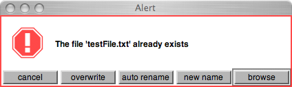

checkDo
an extension for File
part of wslib
opens a file ro write to and checks if it already exists. If yes, a dialog appears with lots of options.
checkDo opens and closes the file internally, the only thing you need to provide is a function for things to be written to the file, which gets the opened file as an argument.
Similar to File:use, but with overwrite check.
File:checkDo ( pathName, function, overwrite, ask, mode )
File.checkDo( "~/Desktop/testFile.txt", { |file| file.putString( "test" ); } );
If you run this line for the second time the following SCAlert dialog will appear:

cancel : the file wil not be written and the function will never be executed
overwrite : the file will overwrite the existing file
auto rename : the file will be renamed automatically using realNextName (file-management)
new name : a SCRequestString dialog will appear where you can specify a new filename. if that also exists you will get the above again
browse : a CocoaDialog.savePanel will appear where you can name and locate your file
arguments:
pathName
the file path (standardizePath is called internally).
If the dirname doesn't exist a directory will be created using makeDir.
function
function to be executed when file is opened. The first argument is the opened file. The file is closed after the function is executed. The function can also be a string, which will be written to the file. easy does it..
File.checkDo( "~/Desktop/testFile.txt", "this is a String" );
overwrite ( default false )
if true no dialog will appear, and the file will simply overwrite any existing files
ask ( default true )
if ask is false and overwrite as well, checkDo will automatically choose auto rename option from the dialog above, which will then in fact never appear.
mode (default "w" )
the mode in which the File is opened